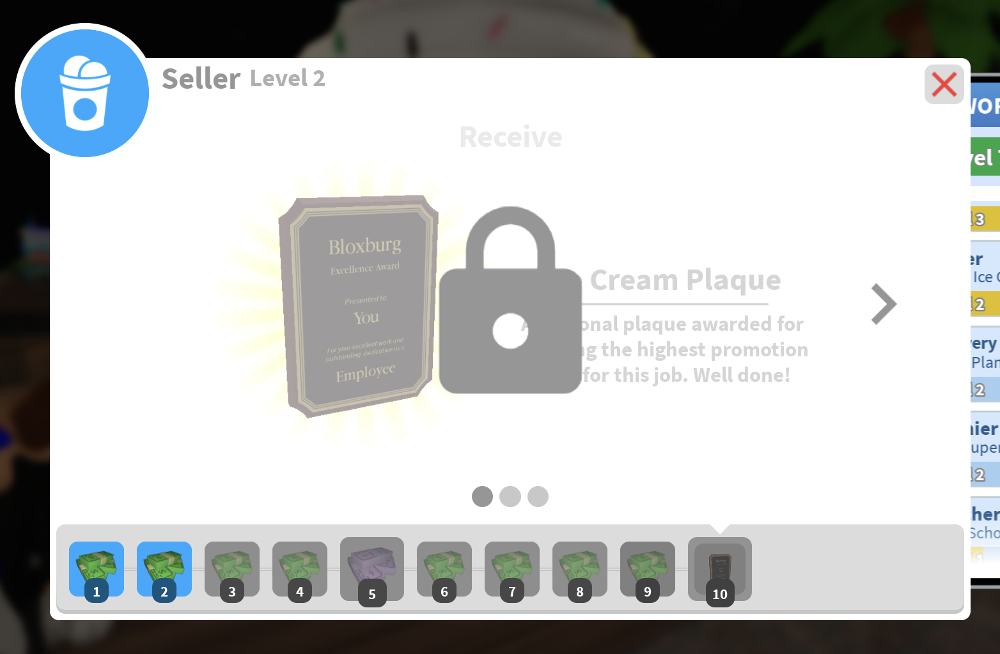

Jobs
Available Jobs
- Pizza Delivery
- Pizza Baker
- A cook or cashier at Blox Burgers
- A cashier or stocker at Bloxburg Fresh Food
- Ice cream seller at Ben's Ice Cream
- Hair dresser
- Mechanic
- Fisherman
- Miner
- Janitor
- Teacher
- Taxi Driver

Because there are so many jobs, it is more likely you'll find a job you enjoy. Bloxburg's job mechanic makes it so that you can gain levels in your job. This increases your pay, and when you hit level milestones you can receive rewards, making any job worth investing your time. There is no bad job. However, if you want the most possible payout, I would recommend being a cashier at Blox Burgers because it is very fast-paced.
